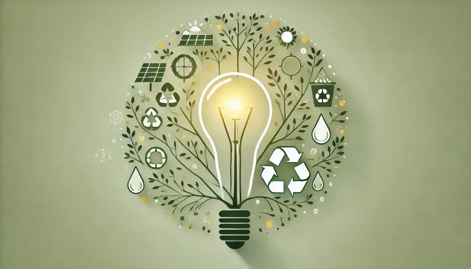

Eco Entrepreneurship
Promoting eco-friendly businesses by offering tools and recommendations for sustainability.
- Duration: Oct 2021 - Jan 2022
- Institution: K L University
- Tech Stack: Java Spring Boot MySQL AWS JSP

Problem Statement
With growing environmental concerns, there is an increasing demand for sustainable businesses that focus on eco-friendly solutions. However, many aspiring entrepreneurs lack resources and guidance on starting and scaling green businesses. The challenge was to create a platform that not only encourages eco-entrepreneurship but also provides tools, resources, and actionable insights for budding entrepreneurs to develop and evaluate environmentally sustainable ventures.
Objective
To design a platform that promotes green entrepreneurship in India by offering suggestions for eco-friendly startup ideas, allowing users to assess the environmental impact of their projects, discover existing green initiatives, and contribute to social causes.
About the Project
Eco-Friendly Startup Suggestions:
Created a feature that provides curated suggestions for starting eco-friendly businesses based on market trends and environmental needs.Focused on low-cost, scalable ideas to support entrepreneurs in economically diverse regions.
Environmental Impact Assessment Tool:
Developed a tool for users to assess the environmental impact of their business ideas.Integrated key metrics such as energy consumption, waste production, and carbon footprint to help users make informed decisions.
Platform for Existing Green Initiatives:
Integrated a database of existing eco-friendly startups and initiatives, enabling users to explore successful business models and potential collaboration opportunities.Created a community feature that encouraged sharing of ideas, challenges, and solutions.
Social Cause Contributions:
Designed features that allowed users to contribute to social causes related to sustainability, such as tree planting, renewable energy projects, or waste management initiatives.Programming Language:
Java: Used for developing the core application logic, ensuring scalability and robustness.Web Framework:
Spring Boot: Employed for creating a RESTful backend that handles user interactions, business logic, and database management.Frontend Technologies:
HTML/CSS/JavaScript: Built an intuitive and responsive user interface to enhance user experience and ensure accessibility across devices.Database Management:
MySQL: Utilized to store and manage user data, environmental metrics, and business suggestions.Optimized relational database design for fast data retrieval and smooth performance.
Deployment and Cloud Hosting:
Amazon Web Services (AWS):Deployed the application on AWS EC2 instances, ensuring high availability, scalability, and cost efficiency.
Utilized AWS RDS for MySQL database management, providing managed, scalable database solutions with automated backups and maintenance.
Leveraged AWS S3 for storing and serving static files such as images and documents related to the business ideas and initiatives.
Version Control and Collaboration:
Git/GitHub: Used for version control and team collaboration, ensuring smooth development and code management.Empowered Eco-Entrepreneurs:
Helped aspiring entrepreneurs by providing them with valuable resources and tools to start their eco-friendly ventures.Supported scalability of green businesses, promoting sustainable practices from the ground up.
Boosted Environmental Awareness:
The environmental impact assessment tool encouraged users to minimize their ecological footprint while launching new businesses.Increased awareness around the importance of sustainable entrepreneurship and its role in addressing climate change and other environmental issues.
Facilitated Collaboration and Social Responsibility:
Enabled users to connect with other green entrepreneurs and participate in sustainability-focused initiatives, fostering a sense of community and shared purpose.Contributed to social causes and environmental conservation by promoting volunteerism and donations for green projects.
Scalable and Reliable Infrastructure:
Deployed on AWS, the platform provided a highly available and scalable solution that can handle increasing user traffic and data as the user base grows.AWS services ensured the application could run efficiently, with minimal downtime and excellent performance.
Economic Value and Business Growth:
Enabled entrepreneurs to launch cost-effective businesses that promote sustainability while benefiting from reduced operational costs through optimized resource management.Positioned the platform as a valuable tool for both new entrepreneurs and established green businesses seeking collaboration opportunities.
User Module:
Allows users to create and manage accounts with profile customization.Tracks user activity, such as contributions to social causes, saved project ideas, and purchase history.
Implements secure user authentication using Spring Security with JWT (JSON Web Tokens).
Generate/Suggest Ideas Module:
Provides personalized eco-friendly business suggestions based on user inputs such as interests, location, and available budget.Uses a rule-based engine and database lookups for tailored recommendations.
Enables users to save suggested ideas for future reference or refinement.
View Existing Projects Module:
Displays a curated list of ongoing and completed eco-friendly initiatives.Includes detailed project information, such as goals, environmental impact, and success stories.
Allows users to interact with projects by leaving feedback or contacting project owners for collaboration.
Donating Money and Buying Module:
Enables users to support eco-friendly projects through monetary donations.Offers a marketplace where users can purchase eco-friendly products or services provided by listed green businesses.
Integrates secure payment gateways such as PayPal or Stripe for transactions.
Update and Delete Projects Module:
Allows project owners to update details of their projects, such as progress updates, new goals, or environmental impact reports.Provides functionality to archive or delete projects that are no longer active or relevant.
Ensures only authenticated project owners can perform these actions.
E-Poster

The "Eco Entrepreneurship" platform successfully integrates green entrepreneurship, sustainability tools, and community engagement. By incorporating key modules like idea generation, project management, and donation capabilities, it addresses critical challenges in eco-business development. AWS deployment ensures the platform’s scalability, reliability, and high performance, making it a powerful tool for fostering green business ecosystems and promoting environmental sustainability.